Do the steps in this order. Each step has a picture from the CAD model. I checked each screw length against the model (Fusion "v0.2 S64", version 91), and not only against the old documents. Ask questions in the thread at any step.
Red screw = M3Blue screw = M2Blue disc = 1 mm washerGold = heat-set insert
Changes from PRINT.md
Wheel to hub: use M3 x 12, not M3 x 8. The wheel is 7.75 mm thick at the screw holes. An M3 x 8 goes only 0.25 mm into the insert. An M3 x 12 goes through the full 4 mm insert and stops 1.3 mm before the bottom of the hole.
Knees: use M3 x 16. PARTS.md says M3 x 12, and that is wrong. The stack is 6 + 1 + 6 = 13 mm.
Pitch servo in the bracket: use the M2 x 6 screws from the servo bag. The arm is 2 mm thick, so an M2 x 8 goes 6 mm into the servo. The holes in the servo model are only 2 to 3 mm deep.
Hip servos before the tray. The hip screws go in from under the spine. When the tray is on, its floor closes that space.
Screws and tools
Count your screws before you start. Your kit list shows about 30 x M3 x 8. This build uses 58.
Fastener
Qty
Where
M3 x 8 button head
58
chassis joint 4, tray rear 2, upper deck 4, lid sides 4, upper links 16, rear links 8, hubs 8, bracket base 4, head 8
hip servos 16, front plates to wheel servos 4, Pi 4.
M2 x 6
6
bus adapter 1 and the IMU on the upper deck (Mofe used these, 30 Oct)
M2 washer
16
hip servos
M2 x 6 pointed (servo bag)
12
yaw servo to lid 4, pitch servo in bracket 8
M4 x 10 + washer
2
OAK-D Lite
M3 x 5 x 4 heat-set insert
18
chassis upper 10, upper deck end pockets 4, hubs 4
Horn centre screws
—
from the servo bags
Tools: soldering iron for the inserts, hex keys for M2 and M3 button heads (an L-key for M2 is necessary inside the spine), small Phillips screwdriver for the servo-bag screws, threadlocker, zip ties, a small piece of Blu Tack to hold screws on the key.
1
Push in the heat-set inserts
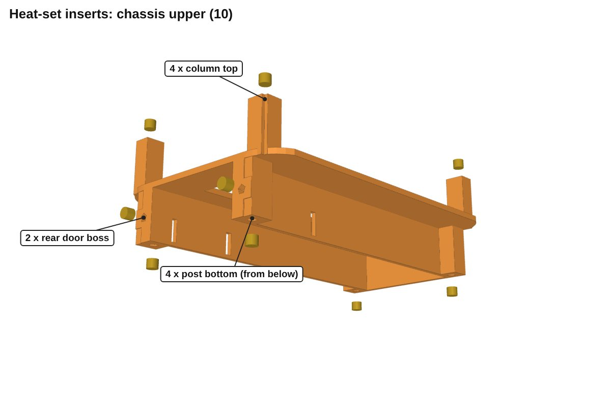
CautionThe deck tab pockets are square, not round. Test one insert in one pocket first. If it does not hold, stop and tell me.
Chassis upper: push 4 inserts into the bottoms of the 4 corner posts. (You did this.)
Chassis upper: push 4 inserts into the tops of the 4 deck columns.
Chassis upper: push 2 inserts into the 2 rear door bosses, from the rear face.
Upper deck: push 1 insert into each of the 4 end pockets, from the end face (2 at the front, 2 at the rear). An M3 nut does not fit there.
Hubs: push 2 inserts into each hub, from the flange face (the face that goes against the wheel). Use the 2 larger holes (4.0 mm) on the centre line, above and below the centre hole. Do not use the 4 smaller holes (3.5 mm). They are for the horn screws.
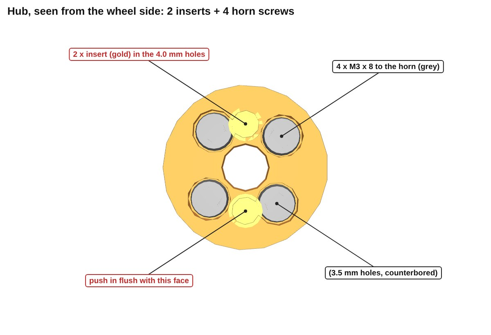
Check: each insert is flush with the face, and it is straight.
2
Join the chassis halves
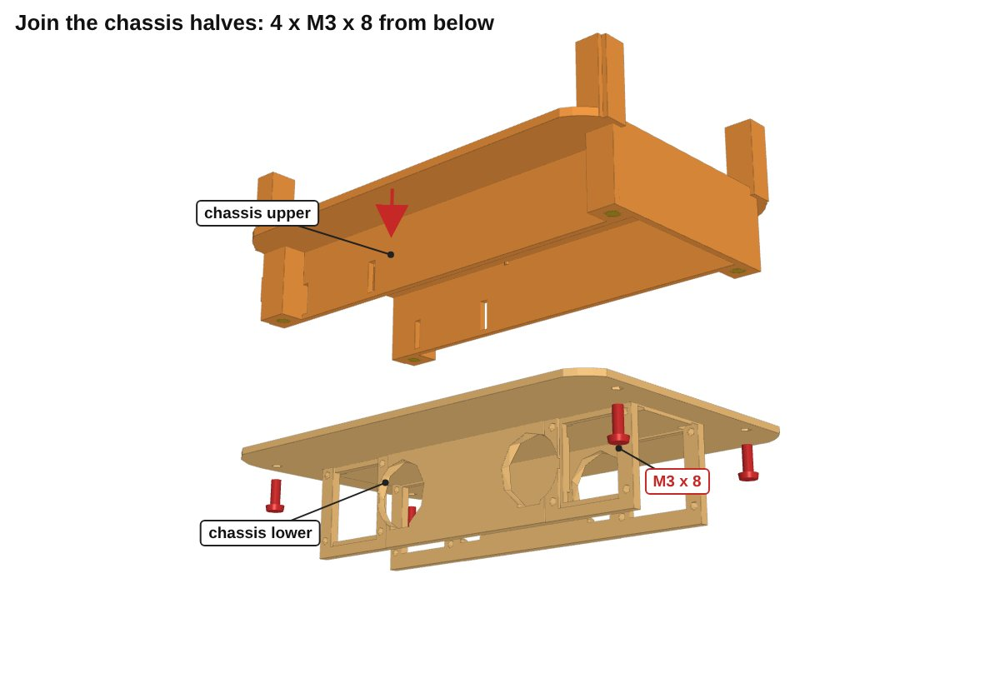
Set the upper chassis on the floor of the lower chassis. The door bosses go to the rear.
Put 4 x M3 x 8 up through the 4 corner holes in the floor, from below, into the inserts. Do not use washers.
Tighten until snug. The floor is 2 mm thick, so each screw goes 6 mm into its post. The hole is 6.5 mm deep.
3
Fit the 4 hip servos
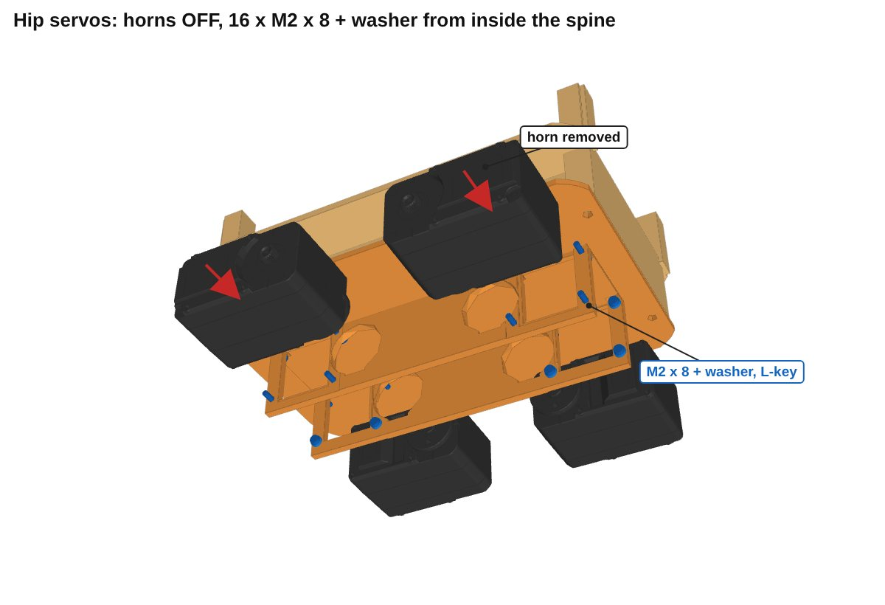
CautionDo this before the tray. You cannot reach these screws after the tray is on.
Set the servo IDs first, one servo at a time, with robot/tools/setup_ids.py: head pitch 1, head yaw 2, hip front-left 3, hip front-right 4, hip rear-left 5, hip rear-right 6, wheel left 11, wheel right 12. Put a tape label on each servo.
Keep the horn on each hip servo, with its centre screw tight. Since S65 the tray has open slots, so the body goes into the tray with the horns on.
Plug the bus cable into the servo before you fit it. The sockets are on the back face, and they go into the pocket in the spine wall.
Put the servo against the spine wall. The back face must sit flat on the 4 pads. The idler disc goes into the round hole in the wall.
From inside the spine, put 4 x M2 x 8 with a washer through the wall into the servo. Use the L-key from below or from the open ends. The upper screw heads go into the small pockets in the spine roof.
Turn each screw by hand at the end. Stop when the head touches the washer. If a screw stops before that, do not force it. Put one more washer under it.
Do the same for all 4 servos (16 screws).
Check: no gap between the servo back and the pads. Each screw goes about 4.3 mm into the servo.
4
Put the power parts in the side bays
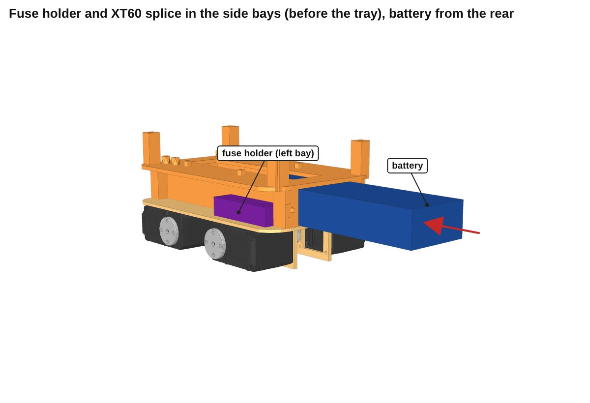
Do this before the tray. The tray closes the side bays.
Put the XT60 splice in the right side bay. Attach it with zip ties through the slots in the battery cradle wall.
The fuse holder does not fit in the left side bay. It goes on the outside of the tray left wall in step 5. Leave its wires long enough to go out through the rear-left slot.
If you use the second bus adapter (wheel servos), decide its place now. PARTS.md says to put it on the tray floor, insulated, with tape or a zip tie.
Leave the wires long. The model does not show cable routes. Route them in step 10 and step 14.
5
Lower the body into the tray
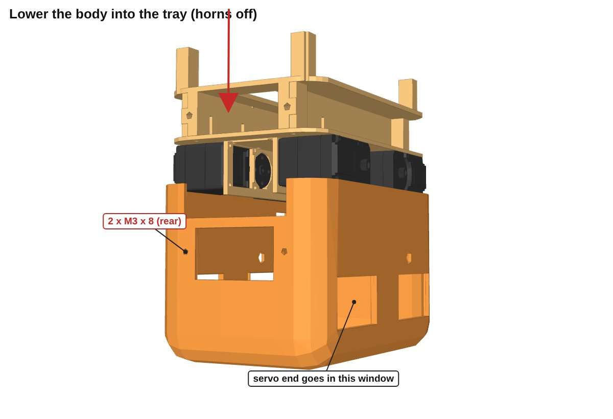
CautionUse the new tray: plate 7 from 30 October (S66), with the 4 slots open to the top edge and 4 small zip-tie holes in the left centre post. The first printed tray (closed windows) does not fit the body.
Keep the 4 hip horns on.
Hold the body level over the tray, with the front of the body over the front of the tray.
Align each hip servo with its slot. Each servo and its horn go down through the slot.
Lower the body straight down until the chassis sits on the tray floor. Do not push the tray walls.
Put 2 x M3 x 8 through the 2 holes in the tray rear wall into the door-boss inserts.
Fuse holder: put it on the outside of the left tray wall, on the centre post between the 2 left slots, lying front to back with the cap up. Put 2 zip ties through the 4 small holes (one tie through the front pair, one through the rear pair) and round the holder. Run its wires in through the rear-left slot.
In the model the body goes straight down with no contact. The smallest gaps are 1.0 mm from each horn disc to the slot edge and 0.5 mm from each servo case to the slot. If it binds, stop and tell me. Inside the wall, each zip tie passes in a 2.0 mm gap between the tray wall and the chassis (a tie is 1.2 mm thick). If a tie does not go through with the body in the tray, put both ties through the holes before you lower the body, and close them after.
6
Check the hip horns
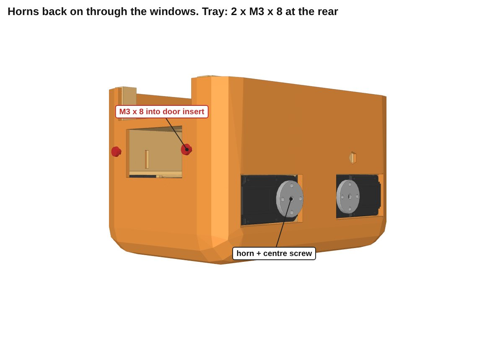
The horns stayed on in step 5. Make sure that each centre screw is tight.
If you removed a horn, push it onto its spline through the slot and put in the centre screw from the servo bag.
The horn position on the spline is not important. The software sets the zero later.
7
Build the 2 wheel units
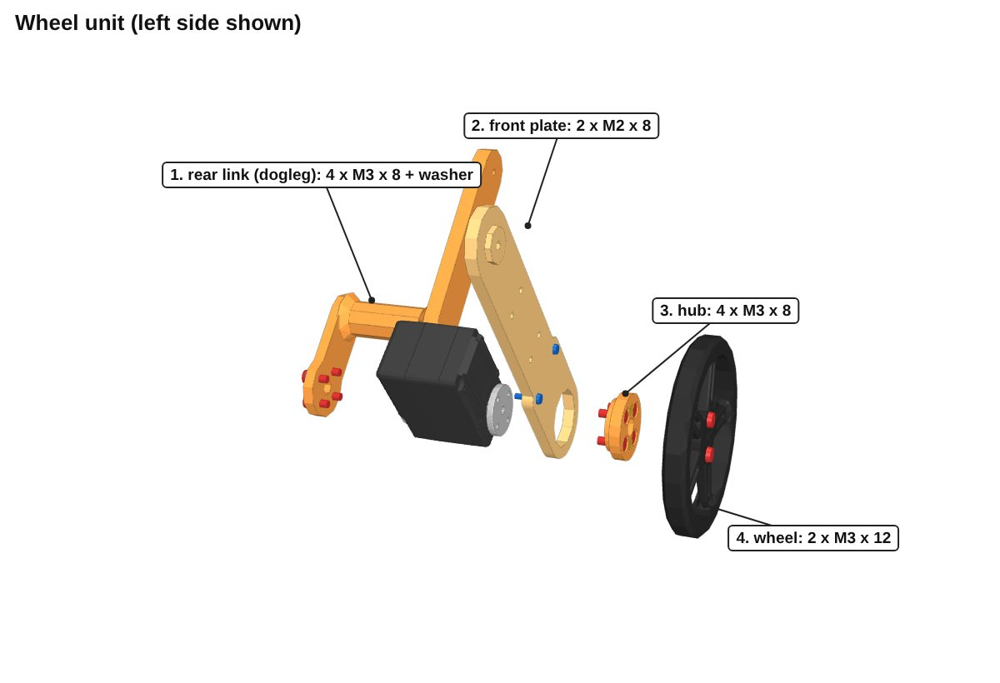
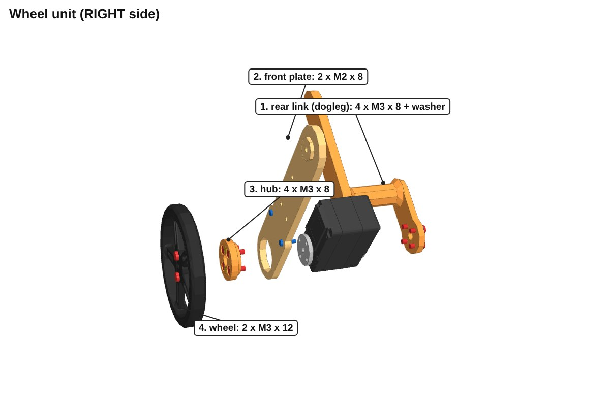
WarningPut a 1 mm washer under each rear-link screw. Without it, the screw tip goes through the idler disc and touches the servo case.
Fit the disc horn from the ST3215-HS box onto the wheel servo spline, with its centre screw.
Rear link (dogleg): put it on the idler disc on the servo back. Put 4 x M3 x 8 + washer through it into the disc, from the inside face.
Front plate: put the ring around the horn. Put 2 x M2 x 8 through the 2 bosses into the servo case. Do this before the hub, because the hub flange is wider than the ring.
Hub: put it on the horn through the ring, flange out. Put 4 x M3 x 8 through the counterbores into the horn. Do not use washers.
Wheel: put 2 x M3 x 12 through the wheel into the 2 hub inserts. These screws do not go into the horn. If a screw turns and does not grip, the insert is missing: push the insert in first (step 1).
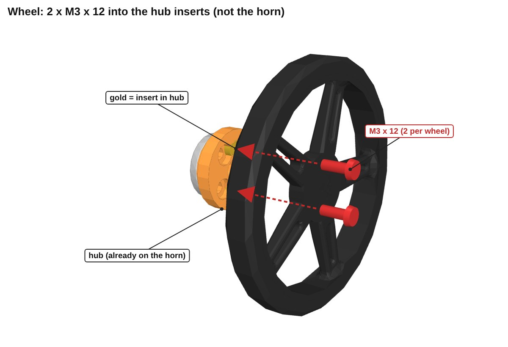
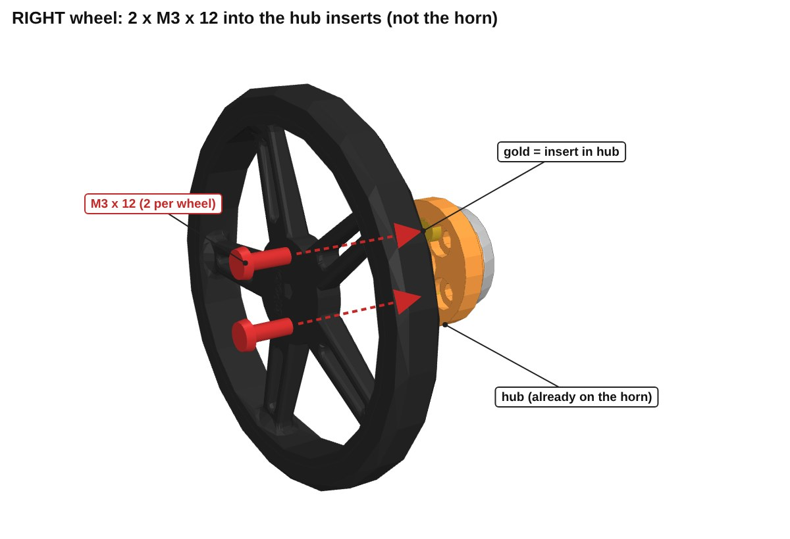
Tie the wheel servo cable to the front plate with zip ties through the small hole pairs.
Make the right unit as a mirror of the left unit (see the RIGHT pictures). The screws and the screw lengths are the same.
Check: the wheel turns with the horn, and the rear link turns freely on the idler disc.
8
Fit the legs
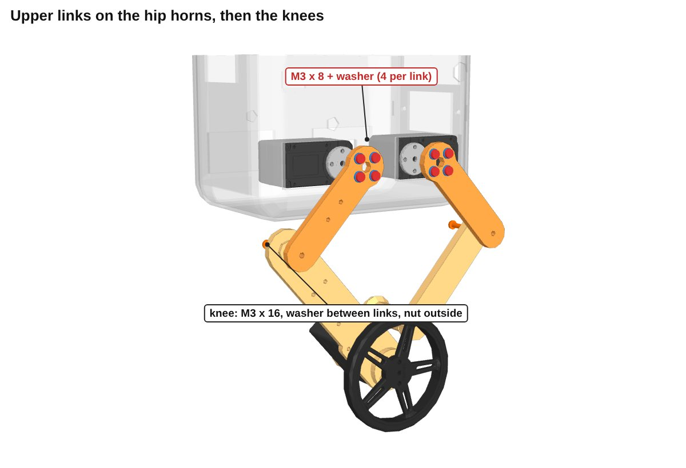
Put each upper link on its hip horn: the front links on the front servos and the rear links on the rear servos. The knee boss goes to the inside.
Put 4 x M3 x 8 + 1 mm washer through each link into the horn (16 screws).
Front knee: upper front link to the front plate of the wheel unit. Rear knee: upper rear link to the rear link of the wheel unit.
For each knee, put an M3 x 16 from the inside (the upper link side). Put a washer between the two links. Put one nut on the outside.
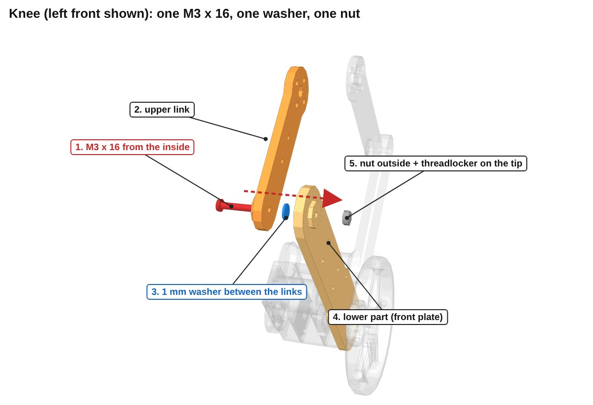
Put a small drop of threadlocker on the screw tip only. Do not put it on the plastic.
Do not tighten the nut hard. The knee must turn freely. The knee hole is 3.2 mm, so the screw is a tight fit. Turn it in. Do not hammer it.
Check: move each leg by hand through the full range. The legs must not touch the tray.
9
Fit the Pi 5
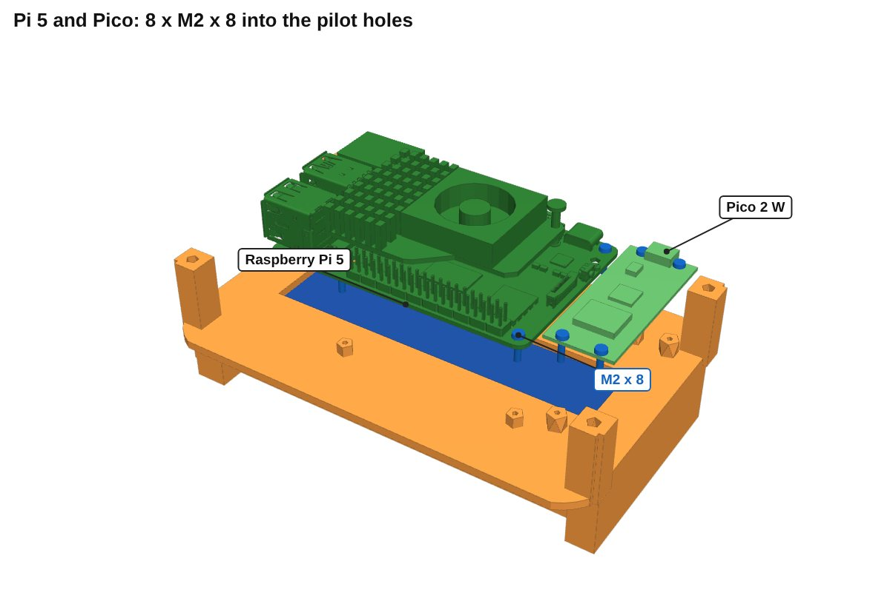
Slide the battery in through the rear door. Hold it with tape or a strap for now. The battery door cover is not designed yet.
Pi 5: put 4 x M2 x 8 through the board into the 4 pilot holes. The screws cut their own thread.
Pico: do not fit it. This build does not use the Pico. The IMU connects to the Pi, and the Pi reads the battery voltage from the wheel servos. Keep the Pico as a spare. The 4 small bosses stay empty. (The picture still shows the Pico.)
10
Fit the upper deck
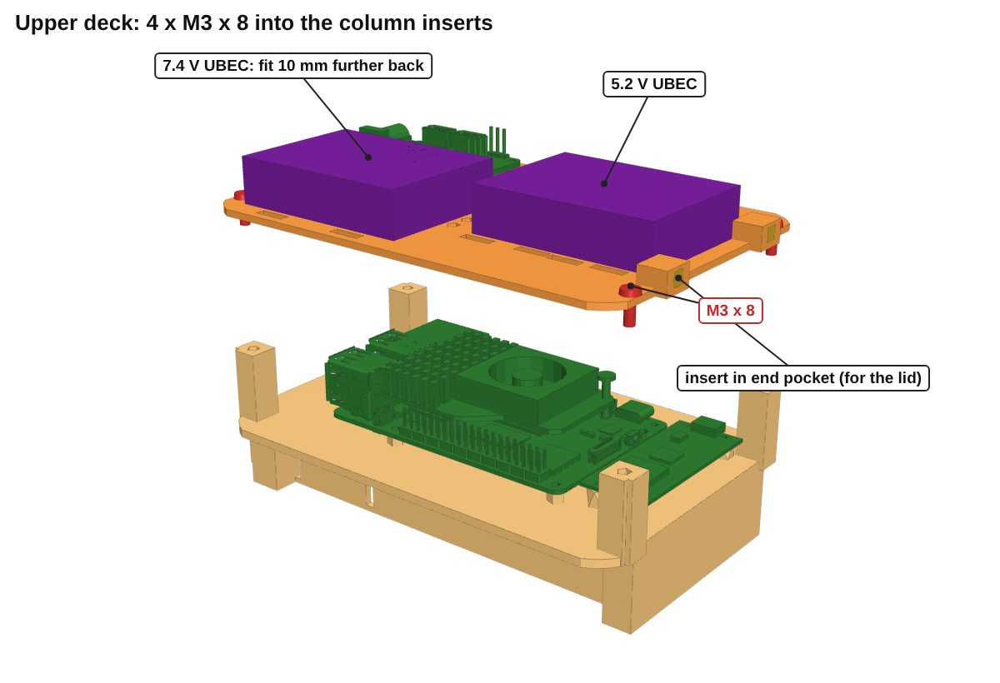
Connect the power and the cables that go under the deck first.
Put the deck on the 4 columns. Put 4 x M3 x 8 through the deck into the column inserts.
Attach the 2 UBECs with foam tape or zip ties. They have no screw holes.
Put the 7.4 V UBEC about 10 mm further to the rear than in the picture. In the model it sits over the yaw servo plug window.
Bus adapter 1 and the IMU: use M2 x 6 into the 2.0 mm deck pilots. Mofe used these on 30 October and they hold.
11
Yaw servo on the lid
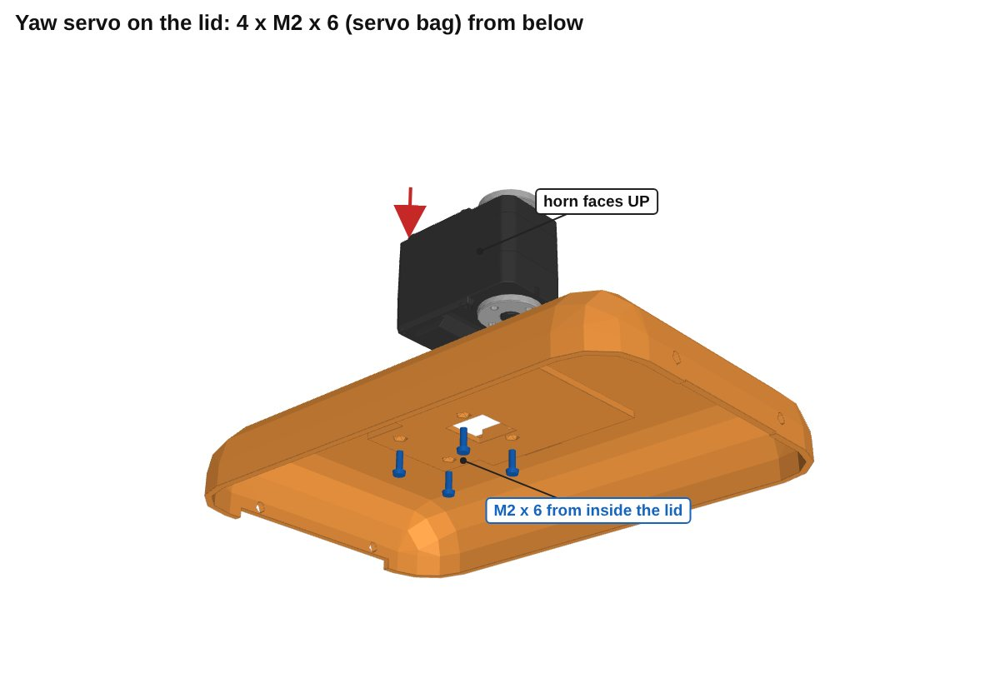
Keep the lid off the body.
Put the yaw servo on the lid with the horn UP. The back face sits on the lid.
Put the plugs and the cable down through the window in the lid.
Put 4 x M2 x 6 (servo bag) up through the lid into the servo, from inside the lid.
12
Bracket on the yaw horn
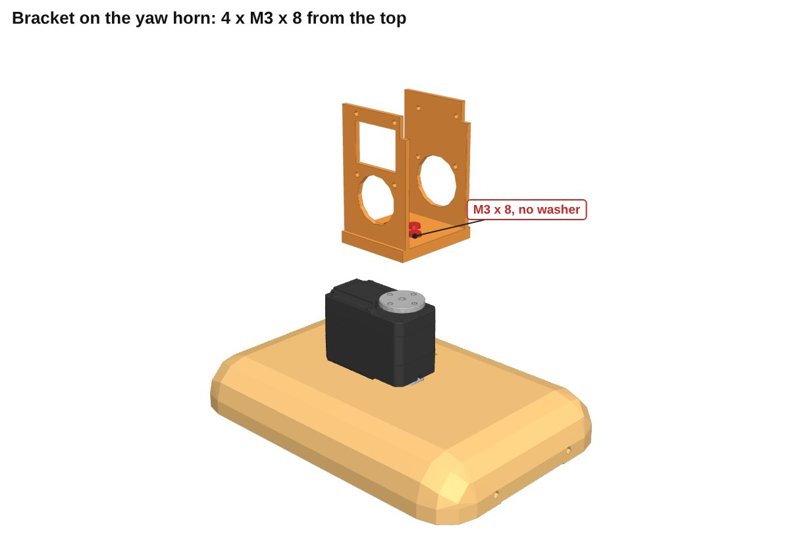
Put the bracket base on the yaw horn.
Put 4 x M3 x 8 from the top, inside the U, into the horn. Do not use washers. (You used this screw here on 28 October.)
13
Pitch servo into the bracket
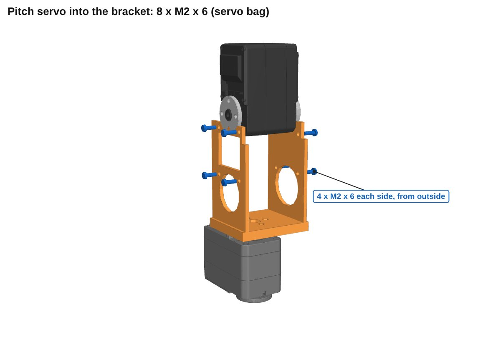
Plug the cable into the pitch servo first.
Put the servo into the U. The horn points to the left side of the robot.
Put 4 x M2 x 6 (servo bag) through each arm from the outside (8 screws). If a screw is loose at the end, put a washer under it.
Fit the horn on the spline with its centre screw. Fit the idler disc on the idler pin.
14
OAK-D Lite and head
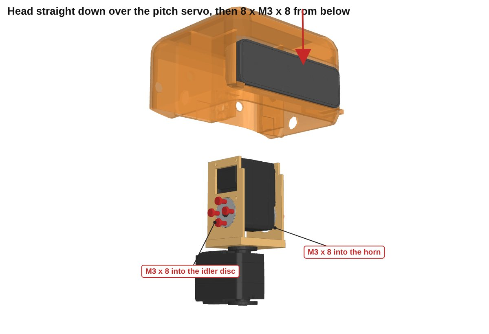
Put the OAK-D Lite on the ledges in the head, lens to the front.
Put 2 x M4 x 10 + washer into the OAK rear holes. Use the key through the two 8 mm holes in the rear wall. The 10 mm side holes are not for these screws.
Connect the right-angle USB-C cable.
Lower the head straight down over the pitch servo. The bracket screw heads slide through the grooves in the head ribs.
Put 4 x M3 x 8 through each rib (8 screws): 4 into the horn and 4 into the idler disc. Do not use washers. Put them in after the head is on, because the screw tips stop the head.
Reach up from under the open bottom of the head. Use the short end of the L-key and turn in small strokes. A small piece of Blu Tack on the key holds the screw.
15
Lid onto the body
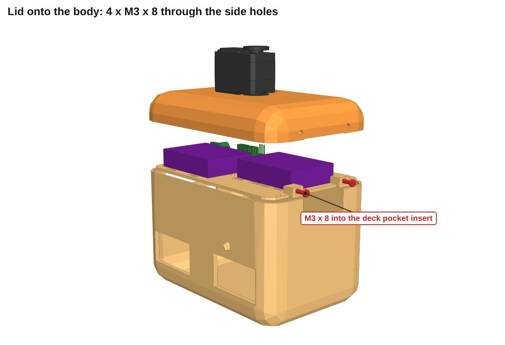
Connect the yaw and pitch servo cables and the OAK cable.
Lower the lid onto the tray.
Put 4 x M3 x 8 through the 4 side holes in the lid ends into the deck pocket inserts. The tip stops about 1 mm before the bottom of the pocket.
16
Power and final checks
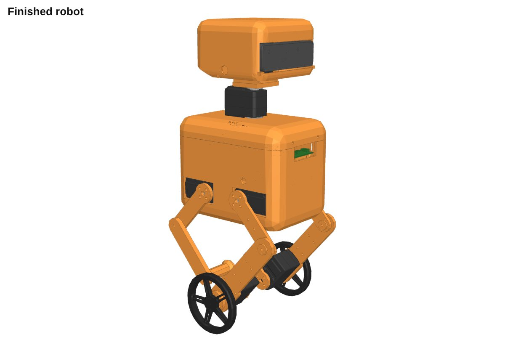
WarningDo not connect the two servo buses together. Bus 2 (wheels) gets battery voltage. Battery voltage can damage the 7.4 V STS3215 servos on bus 1.
Battery → 10 A fuse → XT60 splice.
Splice → 7.4 V UBEC → bus adapter 1 → 4 hip servos, yaw and pitch.
Splice → 5.2 V UBEC → Pi 5. Set usb_max_current_enable=1 on the Pi.
Splice (after the fuse) → bus adapter 2 → 2 wheel servos.
Before power: move each leg and the head by hand. Nothing must rub or touch.
First power: use the 6 V 5 A bench supply, not the battery.
Software limits: leg height 65 to 140 mm, head up 30°, down 50° (40° at full yaw), yaw ±90°.
Not checked in the model
Cable routes. The model has no paths for the servo cables or the power wires.
The real depth of the servo case holes. The servo model shows holes 2 to 3 mm deep. If a screw stops before it is tight, do not force it. Add a washer.